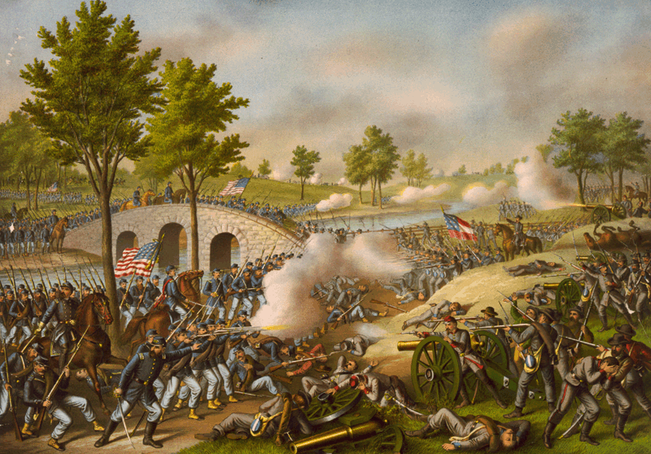
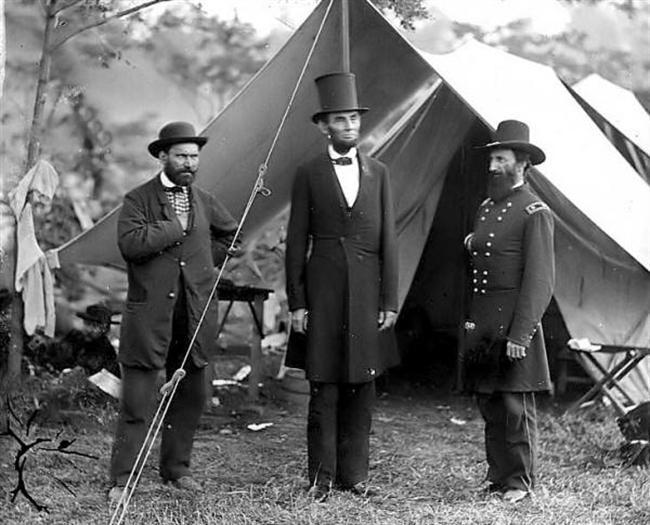

|
Antietam was a campaign and battle fought in the Eastern
Theater of Operations, between Union Major General George B.
McClellan's Army of the Potomac and Confederate General
Robert E. Lee's Army of Northern Virginia. The failure of
Lee's invasion of Maryland ensured enough of a northern
victory to allow President Abraham Lincoln to issue the
preliminary Emancipation Proclamation. Thus, Antietam marked
a turning point in the war for the north, as the goal
changed from union to union and freedom.
Following his success on the Virginia Peninsula
(March-June 1862) and at Second Bull Run (Manassas, August
1862), Lee attempted to capitalize on apparent Union
|

This 1888 print remains one
of the best-known depictions of the Battle of Antietam.
|
demoralization by invading the north. Crossing the Potomac
River during the 1st week of September, he encamped his
approximately 50,000 soldiers near Frederick, Maryland on
the 9th. Disregarding the Union Army, he divided his
forces, sending one corps commanded by Thomas "Stonewall"
Jackson to capture Harpers Ferry and the other under James
Longstreet toward Hagerstown. Together, these two
operations would stop east-west Union rail traffic.
Ultimately, he intended to unite his army near Hagerstown or
Boonsboro.
Union General McClellan, a master of military
organization and recently appointed to command all forces
near Washington, soon had six army corps and with over
90,000 soldiers searching for the Confederate troops. By 12
September he was in the vicinity of Lee's former campground
near Frederick, where his soldiers found a copy of the
Confederate operations order. Within forty-eight hours, the
Union troops had crossed Catoctin Mountain and were
threatening to break through the passes at South Mountain.
Realizing that the enemy was about to split his army, Lee
ordered a concentration near the western Maryland town of
Sharpsburg. To buy him the time he needed, he directed
Major Generals D. H. Hill and J.E.B. Stuart to hold the
passes on South Mountain. They resisted the Union advance
at Crampton, Fox and Turner's Gaps, but by noon on the 15th,
they were withdrawing back to Sharpsburg. With Lee's army
pinned against the Potomac, and much of it still on the road
from Harpers Ferry, McClellan failed to capitalize on
Confederate disorganization and weakness, and attack
immediately. He wasted the entire next day leisurely
deploying his troops in sight of Lee's rapidly improving
command.
The Union attack progressed from north to south. At 6
a.m., McClellan opened with the I Corps (Joseph Hooker)
attacking due south on the Hagerstown-Sharpsburg Turnpike.
A little over an hour later his XII Corps (Joseph Mansfield)
joined the fight. The heaviest fighting took place in sight
of a small white building called Dunkard Church in a
recently harvested cornfield. Fighting was intense as
brigades from Jackson's, John Bell Hood's and Ewell's
Divisions launched fierce counterattacks throughout the
morning. By 9 a.m., Major General John Sedgwick's Division
of II Corps, with the corps commander Edwin V. Sumner in the
lead, joined the fight in the cornfield. In response, Lee
moved John Walker's Division from the southern portion of
the line. Then it, and Lafayette McLaws' Division struck
Sedgwick's troops driving them back in disarray. By noon,
fighting was all but over on the northern portion of the
battlefield as the Confederates had stood their ground.
Sumner's other two divisions followed the first without
guidance or a clear objective. As they crossed Antietam
Creek they diverged from the rest of the corps and drifted
south. Wandering over a small rise, they ran into the
Confederate commands of D.H. Hill and Richard Anderson along
a small sunken farm road. The bloody and intense struggle
|

The Battle of Antietam was fought
about 70 miles from Washington. It is the only
major battlefield that President Lincoln was able
to inspect personally. He did travel to Gettysburg in 1863,
but did so nearly five months after the battle.
|
continued as General William French's division took the
brunt of the southern defenses. A little after noon,
General Israel Richardson's trailing division penetrated the
rebel positions, inflicting a withering fire on the
retreating defenders. The way was open to Sharpsburg and
McClellan still had John Porter's V Corps in reserve.
However, he did not take advantage of his opportunity.
General Ambrose Burnside began IX Corps' attack on the
southern portion of the battle line around 10 a.m. The
greatly outnumbered Confederate force, occupying the high
ground on the far bank, dominated the Antietam Creek and its
stone bridge. Not until 1 p.m. was Samuel Sturgis's Division
able to cross the creek. Two hours later, Burnside had two
divisions (Orlando Wilcox's and Isaac Rodman's) on their way
to Sharpsburg. Lee had no more troops at hand and McClellan
appeared to be on the verge of a decisive victory.
Burnside, however, failed to secure the rise on his left
flank. Just as he was about to enter the town, Major
General A. P. Hill's small division, returning from the
Harpers Ferry operation, arrived on the ridge. Arrayed on
the ridge line, the Confederate troops appeared to confirm
McClellan's worse fears about being outnumbered. The Union
attack stalled, and then withdrew back toward Antietam
Creek.
McClellan had almost physically destroyed the Confederate
Army. Yet, Lee remained defiant on the 18th and the Union
commander did not use his several fresh corps to finish him
off. On the 19th, the southerners withdrew across the
Potomac, at the only ford available, without an effective
Union pursuit. President Abraham Lincoln, disgusted by
McClellan's inability to destroy the Army of Northern
Virginia, relieved him of command in November.
This battle was the bloodiest single day in the Civil War
with over 12,000 Union and almost 14,000 Confederate
soldiers killed and wounded. It was one of the first
photographed battlefields, and its horrific pictures created
shock and dismay among civilians.
Source: Joan Waugh, ed., Facts on File Encyclopedia of American
History: Civil War and Reconstruction, 1856 to 1869 (New York: Facts on
File, 2003), 11-13.
|